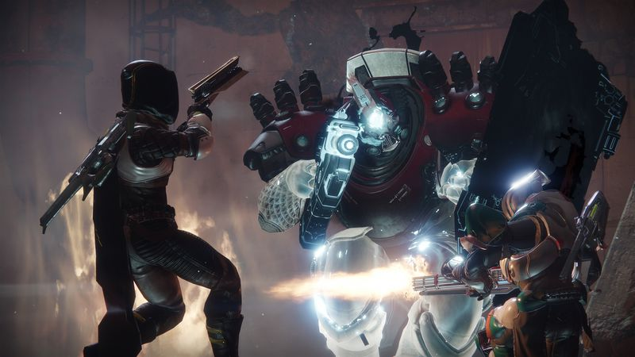

Destiny 2: Everything you need to know
Get caught up, Guardian
by : Yousuf Khan | @myousufkhan360

Destiny 2 is just about here. Yes, you’ll still be shooting aliens throughout the solar system. But a lot has changed for the sequel to one of the most popular yet polarizing games in recent memory, and we’re here to help answer all your burning questions about how Destiny 2 works. We’ll continue to update this FAQ with additional details as we learn them. In the meantime, you can read our review-in-progress of Destiny 2 for detailed impressions.
WHEN AND WHERE CAN I PLAY DESTINY 2?
Destiny 2 launches Sept. 6, 2017, on PlayStation 4 and Xbox One. The Windows PC version won’t be released until Oct. 24, and it will be available exclusively through the Blizzard app, aka Battle.net.
OK, BUT WHEN EXACTLY CAN I PLAY IT?
Bungie and publisher Activision are doing a rolling midnight launch around the globe by country (and in some cases, region). Generally, you’ll be able to start playing once the clock strikes midnight on launch day somewhere in your country. For instance, Destiny 2 will go live for everybody in the U.S. at 12 a.m. EDT on Sept. 6 (9 a.m. PDT on Sept. 5). We don’t yet have details on the rollout of the PC version.
WHERE SHOULD I PLAY IT, THOUGH?
That’s a decision you’ll have to make for yourself. But you should know that once again, Activision has partnered with Sony for a bunch of PlayStation-exclusive content. The items for Destiny 2 will remain exclusive to the PS4 version of the game until “at least fall 2018.
Fighting a Taken Cabal enemy in Lake of Shadows, Destiny 2’s PS4-exclusive strike. Bungie/Activision
The other versions of the game will miss out on a number of items for a year (or longer):
- a strike, Lake of Shadows, which means there will be six strikes on PS4 and five on PC and Xbox One
- a set of legendary armor for each class: Terra Concord (Titan), Tesseract Trace IV (Warlock), Icarus Drifter (Hunter)
- a ship, City Apex
- an exotic sniper rifle, Borealis
- a Crucible map, Retribution
Destiny 2 Beginner's Guide — Everything You Need to Know if You Skipped Destiny 1 :
Some Gamer Reviews about Destiny 2 :
Gmaers have spend alot of time on this game and describet their reviews as ;
A gamer said , I've spent around 20 hours playing Destiny 2, covering the majority of the story missions, dozens of side activities, a Strike, and a handful of rounds in the Crucible. I still have a lot more to go, and I'll be documenting my progress over the next few days as I play more. So far, Destiny 2 builds on the original in smart ways that make me excited to keep playing.
My first impression of Destiny 2 was that it was barely distinguishable from the first game. The things I loved about Destiny--the exhilaration of nailing a precision kill, the satisfaction of shooting each weapon--and things I didn't like as much, namely its inherently repetitive nature. But the more I played, the more I noticed that some of Destiny's other problems have been fixed.